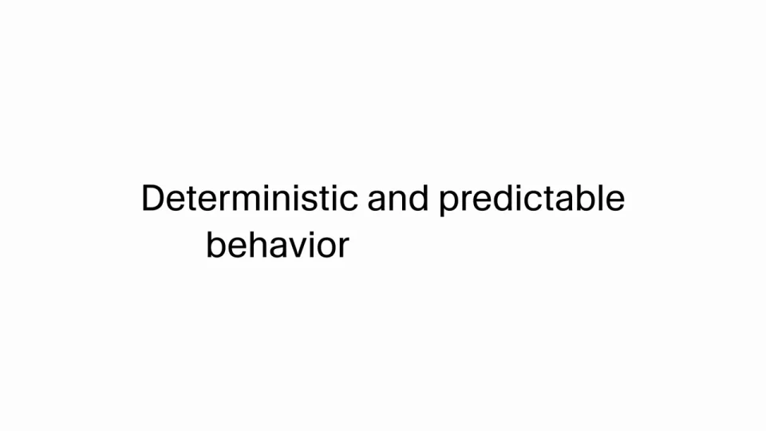
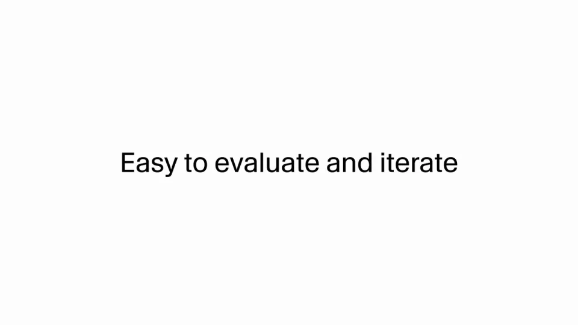
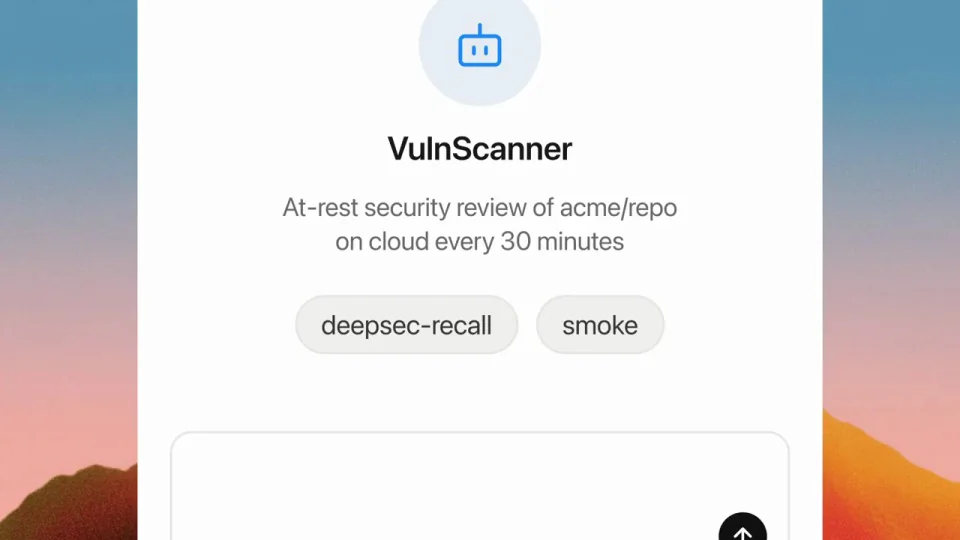

Cursor / V070
Agent SDK 发布
把“代理可以写成代码”落到配置、执行和运营三个层次。代码建立可控制性，运行看板说明结果可以被持续观察。
构图与编排 可播放 · 可替换内容
整体编排规则示例
查看 HTML 源码
<!doctype html><html lang="zh-CN"><meta charset="utf-8"><meta name="viewport" content="width=device-width,initial-scale=1"><title>Agent SDK 发布 · sequence</title><style>html,body{margin:0;width:100%;height:100%;overflow:hidden;background:#f5f5f1}canvas{display:block;width:100%;height:100%;object-fit:contain}</style><body data-mode="sequence"><canvas width="1000" height="600"></canvas><script src="data.js"></script><script src="common.js"></script><script src="scene.js"></script><script src="bridge.js"></script></body></html>画面元素代码目录状态条部署反馈运行计数任务列表评估输入
MOTION LANGUAGE
动作与构图
局部动作 · 构图规则
01
先给最小配置，再给运行状态
开场标题后出现代理文件或任务目录，构建状态变为部署完成，再进入运行看板。每次换到下一层都保留同一任务名，让代码与结果接得上。
02
安静的版面承托技术信息
白底说明页使用简洁无衬线字，一句只讲一个能力。代码或文件名使用等宽字形，看板数据采用对齐数字；温暖背景只出现在产品窗口外围，不压在文本下。
强调色用于选中任务、当前状态或关键计数，成功与运行中文字直接标明，不依赖色彩猜测。
03
运行之后，留一次改进动作
运行之后，留一次改进动作规则示例
查看 HTML 源码
<!doctype html><html lang="zh-CN"><meta charset="utf-8"><meta name="viewport" content="width=device-width,initial-scale=1"><title>Agent SDK 发布 · sequence</title><style>html,body{margin:0;width:100%;height:100%;overflow:hidden;background:#f5f5f1}canvas{display:block;width:100%;height:100%;object-fit:contain}</style><body data-mode="clip" data-start="15" data-end="27"><canvas width="1000" height="600"></canvas><script src="data.js"></script><script src="common.js"></script><script src="scene.js"></script><script src="bridge.js"></script></body></html>看板里同时保留任务名、时间和状态，先聚焦统计，再聚焦一项工作。随后输入新的扫描或改进要求，形成配置到运行，再到调整的闭环。
04
换任务，保留控制关系
可以替换为设计检查、资料整理或站点巡检。同步改代码配置、任务列表、评价项与下一轮请求；标题主张必须能在后续界面里找到对应操作。
SEQUENCE
段落与节奏
点击段落，定位到上方编排示意。



画面参考 · 离散静帧
KEEP THE RELATIONSHIPS
制作其他主题
- 适合开发平台；保留配置、执行、状态、改进四种对象
- 具体代码、指标、任务用途按目标产品替换
制作约束
代码目录 / 状态条 / 部署反馈 / 运行计数 / 任务列表 / 评估输入
- 代码配置的抽象主张后必须配运行看板，证明过程可观测
- 构建中变为部署完成，再出现多任务状态计数
- 末段从看板回到新请求，形成运行→评估→迭代闭环